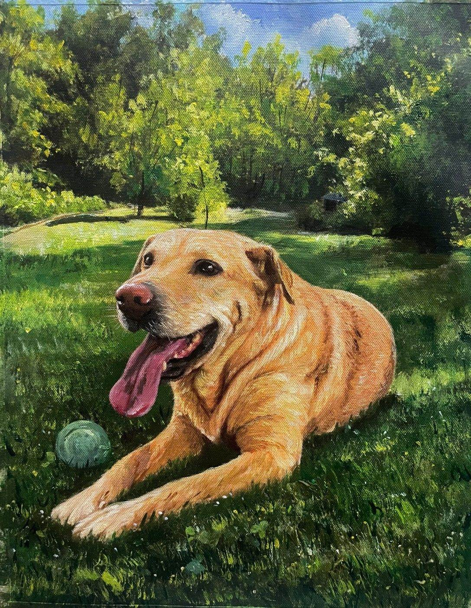

What makes an oil portrait different?
An original oil portrait is painted by hand with physical paint on a surface. The artist interprets your pet's expression, colours and character through brushwork. A digital portrait is created using digital tools and may be delivered as a file or a physical print.
Neither choice is right for everyone. The important thing is knowing exactly what you will receive.
Original oil pet portrait vs digital portrait
| What to compare | Original oil painting | Digital artwork or print |
|---|---|---|
| How it is made | Painted by an artist with oil paints | Created digitally; may be printed |
| What you receive | A physical original artwork | Usually a file, print or both, depending on the seller |
| Surface and texture | Real painted surface and brushwork | Depends on paper, canvas and printing method |
| Price and timing | Depends on size, complexity, painting and drying | Varies widely by artist, format and printing |
| Best for | Someone who values an original, handmade artwork | Someone who prefers a digital format or reproduction |
How to tell whether a portrait is genuinely hand-painted
Look for photographs of completed physical paintings, close-up brushwork and a clear explanation of the process. Ask whether the price is for an original painting or a print. At ATELIER HAU, our commissions are original oil paintings, not AI-generated images or printed reproductions. You can explore our actual painting collection and painting process.
Is an oil portrait suitable as a pet memorial gift?
Many people choose an original portrait to remember a companion, celebrate an adoption or mark a special moment. The most meaningful reference is often a photograph that captures a familiar expression. If you are unsure which photo to use, read our guide to choosing reference photos.
How do I commission an original oil portrait in Australia?
Choose a canvas size and the number of pets, upload reference photographs, and enter your delivery details in our commission form. Prices are shown in AUD; you can also review portrait sizes and pricing. The artwork is painted by hand in Ho Chi Minh City, Vietnam. International shipping and possible customs charges are explained in our policies.
EXPLORE YOUR PORTRAIT OPTIONS